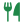

<div class="container">
  <div class="header">
    <h2>Лучшие рецепты</h2>
    <h6>
      На нашем сайте вы найдете лучшие рецепты, которые помогут вам создавать
      великолепные блюда и порадовать своих близких и гостей своим кулинарным
      мастерством.
    </h6>
  </div>
  <div class="box">
    <ng-container *ngFor="let item of recipe">
      <div class="box_recipe">
        <div class="logo">
          
        </div>
        <div class="description">
          <h5>{{ item.title }}</h5>
        </div>
        <div class="favorite">
          <button
            mat-mini-fab
            matTooltip="Warn"
            color="warn"
            aria-label="Example mini fab with a heart icon"
          >
            <mat-icon>favorite</mat-icon>
          </button>
        </div>
        <div class="icons">
          <div class="tags">
            <span></span
            >{{ item.timeCooking }}
          </div>
          <div class="tags">
            <span></span
            >{{ item.tags }}
          </div>
        </div>
      </div>
    </ng-container>
    <div class="more">
      <button mat-stroked-button color="primary" style="color: inherit">
        Посмотреть еще
      </button>
    </div>
  </div>
</div>
